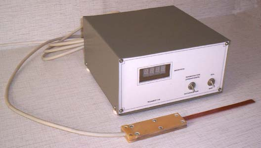
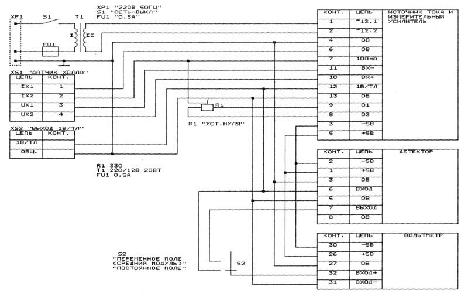
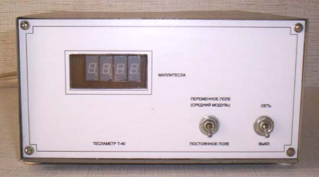
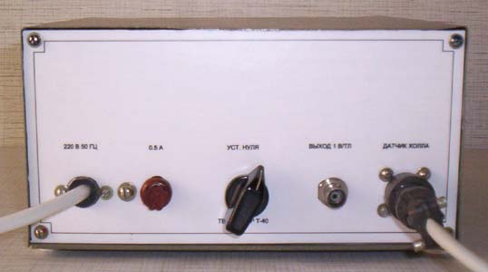

Цифровой тесламетр с
датчиком Холла типа
ПХЭ для измерения индукции магнитного поля

Назначение
Цифровой тесламетр предназначен для оперативного измерения и контроля величины индукции постоянного или переменного низкочастотного магнитного поля с помощью датчика Холла типа ПХЭ606118В [2]. Он может использоваться при измерении характеристик магнитных материалов, при разработке и ремонте магнитных систем и устройств с постоянными магнитами, для построения различных измерительных установок и комплексов [3]. При использовании внешнего прибора (осциллографа или пикового вольтметра) может применяться для контроля величины амплитуды магнитной индукции в установках импульсного намагничивания и размагничивания [4].
Условия эксплуатации:
Технические данные:
Устройство тесламетра
Электрическая принципиальная схема цифрового тесламетра с датчиком Холла типа ПХЭ приведена на рис. 1.

Рис. 1. Электрическая принципиальная схема цифрового тесламетра с датчиком Холла типа ПХЭ.
Принцип работы тесламетра основан на измерении ЭДС Холла, возникающей при наличии магнитного поля в зоне датчика при питании последнего постоянным током.
Прибор состоит из следующих основных узлов: источник тока и измерительный усилитель со стабилизаторами напряжения, детектор, цифровой вольтметр с аналого-цифровым преобразователем (АЦП) и светодиодным индикатором, щуп с датчиком Холла. Питание прибора осуществляется от сети переменного тока напряжением 220 В частотой 50 Гц через защитный предохранитель FU1 и сетевой выключатель S1. Трансформатор T1 понижает сетевое напряжение до необходимого уровня. Со вторичной обмотки сетевого трансформатора T1 переменное напряжение подается на плату источника тока и измерительного усилителя, где с помощью выпрямителя, фильтров и стабилизаторов вырабатываются необходимые для питания электронных узлов прибора постоянные напряжения.
Для питания датчика Холла используется стабилизатор тока величиной 100 мА. Щуп с датчиком Холла подключается через разъем XS1 "ДАТЧИК ХОЛЛА". Измерительный усилитель усиливает полезный сигнал датчика Холла до уровня 1 вольт/тесла. С выхода измерительного усилителя, в зависимости от разновидности измеряемого магнитного поля (постоянное или переменное) сигнал через переключатель S2 подается на вход вольтметра напрямую или через детектор. Кроме того, этот сигнал выводится на внешний разъем XS2 "ВЫХОД 1 В/ТЛ", чтобы обеспечить возможность совместной работы тесламетра с другими измерительными приборами или оборудованием.
Детектор собран по схеме двухполупериодного выпрямителя с фильтром нижних частот. Вольтметр состоит из аналого-цифрового преобразователя (АЦП) со светодиодным семисегментным индикатором [1].
Тесламетр выполнен в виде переносного прибора. Датчик Холла монтируется в щупе С- или М-типа с разборной или неразборной рукояткой, к которой крепится кабель для подключения датчика к прибору. На рукоятке щупа имеется маркировка в виде знака "+" или стрелы, позволяющая определять направление магнитного поля.
На рис. 2 и 3 показан вид тесламетра спереди и сзади, соответственно.

Рис. 2. Цифровой тесламетр с датчиком Холла типа ПХЭ (вид спереди).

Рис. 3. Цифровой тесламетр с датчиком Холла типа ПХЭ (вид сзади).
Желающие приобрести или самостоятельно изготовить цифровой тесламетр с датчиком Холла типа ПХЭ могут обратиться за дополнительной информацией к автору (см. раздел Контактная информация).
Ссылки:
22.06.2007
17.07.2007
Альтернативные источники
энергии
Компьютеры и
Интернет
Магнитные поля
Механотронные системы
Перспективные
разработки
Электроника и
технология